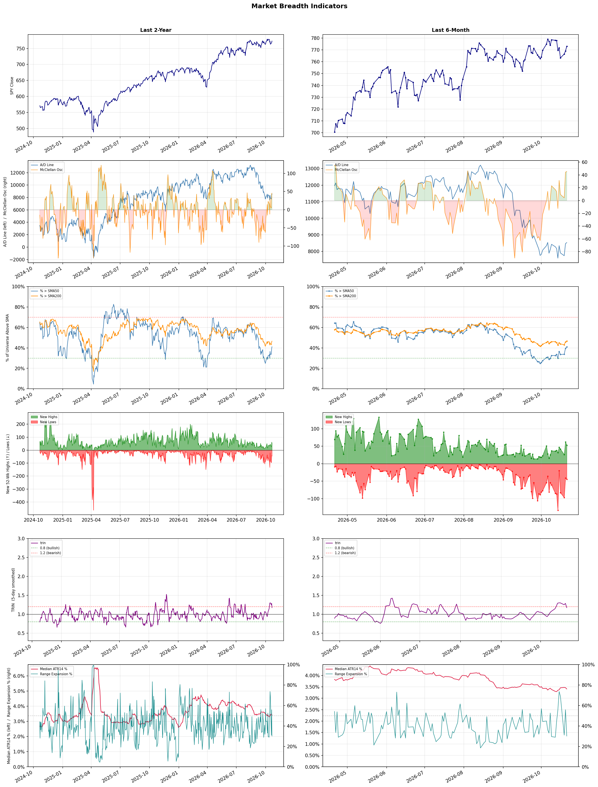

A daily market breadth and sector rotation report for active investors
| Item | Read |
|---|---|
| Regime | Defensive |
| Risk posture | Defensive |
| Universe | 1,315 stocks tracked · 53 new 52-week highs · 30 active swing setups |
| Breadth | only 41.1% of tracked stocks are above SMA50, new highs exceed new lows (53 vs 45) |
| Leadership | Oil & Gas Refining & Marketing, Oil & Gas Integrated, and Oil & Gas E&P |
| Weakest groups | Uranium, REIT - Mortgage, and Electrical Equipment & Parts |
Use this report to prioritize research and chart review; validate entries, stops, liquidity, earnings, and risk before acting.
| Item | Read |
|---|---|
| Primary read | Defensive regime with Defensive risk posture. |
| Research queue | MPC, VLO, PSX, DINO, PBF |
| Leadership focus | Oil & Gas Refining & Marketing, Oil & Gas Integrated, and Oil & Gas E&P |
| Caution list | Uranium, REIT - Mortgage, and Electrical Equipment & Parts |
| Review prompt | Check extension risk, chart location, fundamentals, valuation, and earnings before using any research row. |
| Item | Read |
|---|---|
| Primary read | 1 active risk warnings; use screen output as watchlist input only. |
| Bullish screens | UGP, HNGE, HTFL, VEEV, APLE |
| Bearish screens | none |
| Alerts / levels | Automated trigger, stop, ATR, liquidity, reward/risk, and event-risk levels are pending future enrichment. |
| Review prompt | Open the linked chart, define trigger and invalidation, then check liquidity and event risk independently. |
Risk Posture: Defensive — screen backdrop favors caution; require independent risk review before new exposure
Metric context: McClellan below -50 = elevated selling pressure; below -100 = washout territory. Range Expansion = share of stocks with daily range above their 20-day average. Signal Density = share of tracked names appearing in signal screens.
| Breadth Date | % > SMA50 | % > SMA200 | New Highs | New Lows | McClellan | Median Range | Avg Range | Median ATR14 | Range Expansion | Signal Density |
|---|---|---|---|---|---|---|---|---|---|---|
| 2026-10-21 | 41.1% | 46.6% | 53 | 45 | 45.5 | 2.8% | 3.2% | 3.4% | 30.1% | 2.7% |

Prior comparison date: October 20, 2026
| Metric | Prior | Current | Change |
|---|---|---|---|
| Regime | Defensive | Defensive | unchanged |
| Risk Posture | Defensive | Defensive | unchanged |
| % > SMA50 | 39.6% | 41.1% | +1.5 pts |
| % > SMA200 | 45.9% | 46.6% | +0.7 pts |
| New Highs | 62 | 53 | -9 |
| New Lows | 41 | 45 | -4 |
Top-10 industries entering: Software - Application. Top-10 industries leaving: Apparel Manufacturing. New multi-signal long setups: ADP, AEP, AMPL, APLE, AVPT, AVTR, AZTA, BDX, BRZE, CDW. New multi-signal short setups: none.
| Status | Tickers | Read |
|---|---|---|
| Added | ADP, AEP, AMPL, APLE, AVPT, AVTR, AZTA, BDX | New technical screen matches vs prior report. |
| Removed | AMPX, ARQT, AVAV, BLDP, BRUN, BTBT, ENVX, FLY | No longer present in today's technical screen matches. |
| Still Active | BOX, HTFL | Appeared in both current and prior reports. |
| Promoted | none | Model Screen Score improved by at least 15 points. |
| Downgraded | none | Model Screen Score declined by at least 15 points. |
| Direction | Industry | ETF | Prior Rank | Current Rank | Days | Rank Change |
|---|---|---|---|---|---|---|
| Rose | Apparel Manufacturing | N/A | 82 | 11 | 42 | +71 |
| Rose | Restaurants | N/A | 83 | 23 | 28 | +60 |
| Rose | Building Products & Equipment | XHB | 84 | 27 | 35 | +57 |
| Rose | Travel Services | N/A | 84 | 29 | 28 | +55 |
| Rose | Utilities - Regulated Electric | XLU | 79 | 28 | 28 | +51 |
Bull: The Apparel Manufacturing sector is experiencing a rise in relative strength primarily due to favorable macroeconomic trends, including a shift in trade deals and sourcing strategies away from China, as highlighted in The Economic Times. This shift is expected to revitalize the sector by reducing dependency on a single market and enhancing supply chain resilience. Additionally, the positive outlook from analysts, as noted in Zacks and The Motley Fool, suggests that leading companies like Ralph Lauren and Crocs are well-positioned to capitalize on these trends, driving investor confidence and stock performance.
Bear: While the shift in trade deals and sourcing strategies may seem beneficial, it could also lead to increased costs and supply chain disruptions as companies navigate new markets and establish relationships with alternative suppliers. Additionally, the apparel sector is facing persistent challenges such as rising raw material costs, inflationary pressures on consumer spending, and changing consumer preferences towards sustainability, which could undermine the optimistic projections of growth and profitability for companies like Ralph Lauren and Crocs. Thus, the current relative strength may be misleading, masking underlying vulnerabilities in the industry.
Verdict: The Apparel Manufacturing sector's rise is fundamentally driven by a strategic shift away from reliance on China, enhancing supply chain resilience and attracting investor confidence in companies like Ralph Lauren and Crocs. However, the bear case highlights a critical risk: the potential for increased costs and supply chain disruptions as firms adapt to new sourcing strategies, alongside persistent challenges such as inflation and evolving consumer preferences for sustainability, which could dampen growth prospects. Investors should closely monitor these dynamics to assess the sustainability of the sector's current strength.
Sources: Google News
Bull: The restaurant industry is likely experiencing rising relative strength due to a combination of resilient consumer spending and strategic positioning among key players, as highlighted by the Yahoo Finance article on stocks poised to thrive amid industry headwinds. Additionally, the focus on investment opportunities in restaurant ETFs, as noted by The Motley Fool, suggests growing investor confidence in the sector's recovery and growth potential, despite some short-term volatility seen in individual stocks like Chipotle and McDonald's. This optimism is further supported by Darden Restaurants' performance relative to the broader consumer discretionary sector, indicating strong fundamentals in certain restaurant stocks.
Bear: While the restaurant industry may currently show rising relative strength, this could be misleading given the broader economic context of inflation and potential recessionary pressures that may dampen consumer spending in the near future. The recent dips in major players like Chipotle, McDonald's, and Starbucks highlight the fragility of this sector, suggesting that the optimism reflected in articles may be overly optimistic and not account for the potential for declining consumer discretionary spending as households tighten their budgets. Furthermore, the focus on ETFs may mask the underlying volatility and performance disparities among individual stocks, which could lead to significant risks for investors.
Verdict: The restaurant industry's rising relative strength is primarily driven by resilient consumer spending and strategic positioning of key players, indicating a recovery and growth potential in the sector. However, investors should remain cautious of the key risk posed by inflation and potential recessionary pressures, which could lead to decreased discretionary spending and negatively impact individual stock performance. It is advisable to closely monitor economic indicators and consumer sentiment while considering investments in restaurant stocks or ETFs.
Sources: Google News
Bull: The Building Products & Equipment sector is experiencing rising relative strength primarily due to increased infrastructure investment, as highlighted in the TradingView article discussing heavy construction stocks benefiting from this trend. Additionally, the bullish sentiment surrounding specific stocks, such as Aaon, which saw a notable share price jump, indicates growing investor confidence in the sector's growth potential. This optimism is further supported by broader market interest in construction stocks, as suggested by the Motley Fool's focus on the best construction stocks for 2026, signaling a positive outlook for the industry.
Bear: While the bullish sentiment around increased infrastructure investment may currently boost relative strength in the Building Products & Equipment sector, this optimism may be overly optimistic given the potential for economic headwinds such as rising interest rates and inflation, which could dampen construction activity and financing. Additionally, the recent headlines highlighting skepticism towards certain stocks, like those in the Russell 2000, suggest that not all investors share the same confidence, indicating possible overvaluation and volatility risks within the sector.
Verdict: The Building Products & Equipment sector's rising relative strength is fundamentally driven by increased infrastructure investment, which is bolstering investor confidence and leading to notable stock price gains, particularly in key players like Aaon. However, investors should remain cautious of potential economic headwinds such as rising interest rates and inflation, which could negatively impact construction activity and financing, posing risks of overvaluation and increased volatility within the sector.
Sources: Google News
Bull: The Travel Services industry is experiencing a rise in relative strength primarily due to a robust recovery in consumer demand for travel, as highlighted by multiple sources pointing to strong stock performance and optimism for the sector's future. Notably, Morgan Stanley's endorsement of a preferred online travel pick indicates confidence from major financial institutions, while articles from MarketBeat and The Motley Fool emphasize the potential for significant growth in travel and tourism stocks through 2026, driven by pent-up demand and increasing consumer spending in the post-pandemic era. Additionally, the mention of Marriott and consumer discretionary trends suggests that established players are capitalizing on this resurgence, further bolstering investor sentiment in the sector.
Bear: While the travel services industry may currently exhibit rising relative strength and optimism, several headwinds could undermine this bullish outlook. Increasing economic uncertainty, driven by inflationary pressures and potential recession fears, may dampen consumer spending on discretionary travel, leading to a slowdown in demand. Furthermore, the emergence of AI technologies, as noted in the recent headlines, could disrupt traditional travel models and create competitive challenges for established players, potentially eroding margins and investor confidence in the sector's long-term growth prospects.
Verdict: The travel services industry's rise is fundamentally driven by a strong recovery in consumer demand, fueled by pent-up travel desires and increased spending in the post-pandemic era, as evidenced by positive stock performance and endorsements from financial institutions. However, key risks include economic uncertainty and inflation, which could dampen discretionary spending on travel, alongside the potential disruptive impact of AI technologies on traditional travel models that may erode margins and investor confidence. Investors should closely monitor economic indicators and technological advancements that could affect demand and competitive dynamics in the sector.
Sources: Google News
Bull: The Utilities - Regulated Electric sector is experiencing rising relative strength primarily due to increasing investor confidence in power demand growth, as highlighted by Morningstar's coverage of utilities rallying on this expectation. Additionally, the focus on top-performing electric utility stocks, as noted by The Motley Fool and NerdWallet, suggests a robust outlook for the sector, driven by stable earnings and the essential nature of electricity in a recovering economy. This positive sentiment is further reinforced by comparative analyses, such as those from TradingView, that indicate strong investment potential within the sector, positioning it favorably against other industries.
Bear: While the rising relative strength in the Utilities - Regulated Electric sector may appear promising, it is crucial to consider the potential headwinds that could undermine this bullish outlook. Increasing interest rates and inflationary pressures may lead to higher borrowing costs for utility companies, constraining their ability to invest in infrastructure and maintain profitability. Additionally, the ongoing push for renewable energy sources could result in significant regulatory and operational challenges, potentially dampening earnings growth and investor confidence in the sector's long-term stability.
Verdict: The Utilities - Regulated Electric sector is experiencing rising relative strength due to heightened investor confidence in power demand growth, supported by stable earnings and the essential nature of electricity in a recovering economy. However, key risks include increasing interest rates and inflation, which could elevate borrowing costs and hinder infrastructure investments, potentially impacting long-term profitability and investor sentiment. Investors should closely monitor these economic indicators and regulatory developments in renewable energy as they assess the sector's outlook.
Sources: Google News
| Direction | Industry | ETF | Prior Rank | Current Rank | Days | Rank Change |
|---|---|---|---|---|---|---|
| Fell | Agricultural Inputs | N/A | 7 | 79 | 42 | -72 |
| Fell | Capital Markets | KCE | 8 | 71 | 28 | -63 |
| Fell | Uranium | URA | 25 | 87 | 42 | -62 |
| Fell | Electronic Components | XLK | 6 | 67 | 14 | -61 |
| Fell | Semiconductor Equipment & Materials | SOXX | 5 | 63 | 14 | -58 |
Bear: While the bullish outlook from The Motley Fool may suggest potential recovery in the Agricultural Inputs sector, the persistent pressures from weak monsoon demand and rising costs are likely to continue hampering earnings and overall growth. Additionally, the relative strength trend is falling, indicating that investor sentiment is deteriorating, and any short-term optimism may not be enough to counteract the fundamental challenges facing the sector, such as supply chain disruptions and increasing competition from alternative agricultural solutions. Thus, the outlook remains bearish as these headwinds could lead to further declines in stock performance.
Bull: The Agricultural Inputs sector is experiencing a decline in relative strength primarily due to pressures from weak monsoon demand and rising costs, as highlighted by the Indiatimes article on agrochem stocks. This has led to a negative impact on earnings within the sector, overshadowing the overall positive sentiment in economically sensitive materials, as noted by Seeking Alpha and Morningstar. However, the recent bullish outlook from The Motley Fool suggests that despite current challenges, there are still strong investment opportunities in agriculture, particularly as market conditions stabilize and demand rebounds.
Verdict: The Agricultural Inputs sector is likely experiencing a decline due to a combination of weak monsoon demand and rising operational costs, which are pressuring earnings and investor sentiment. The key risk from the bear case is that persistent supply chain disruptions and increasing competition from alternative agricultural solutions may continue to overshadow any potential recovery, making it crucial for investors to closely monitor market conditions and adjust their strategies accordingly. In light of these factors, a cautious approach is advisable, focusing on companies with strong fundamentals that can weather these challenges.
Sources: Google News
Bear: While the bull analyst attributes the decline in the Capital Markets sector to the tech sell-off, this perspective overlooks broader economic headwinds that could be affecting investor sentiment across multiple sectors. The persistent volatility in interest rates and geopolitical uncertainties may be causing a more systemic risk aversion among investors, leading to a flight to safety rather than capital inflows into Capital Markets. Additionally, even if some sectors are identified as primed for growth, the overall market environment suggests that capital may remain constrained, limiting the potential for recovery in Capital Markets.
Bull: The Capital Markets sector is experiencing a decline in relative strength primarily due to an extended sell-off in the tech sector, which has significantly impacted investor sentiment and market dynamics, as highlighted by LancasterOnline. Additionally, the easing of oil prices and US yields, while generally positive, may not be sufficient to offset the bearish trends in tech, leading to a cautious outlook among investors and diminishing capital flows into the Capital Markets sector. This backdrop suggests that while some sectors are primed for growth, as noted by J.P. Morgan, the current challenges in tech are overshadowing potential gains in Capital Markets.
Verdict: The decline in the Capital Markets sector is primarily driven by a significant sell-off in the tech sector, which has dampened investor sentiment and reduced capital flows. However, a key risk highlighted by the bear thesis is the broader economic uncertainties, including persistent interest rate volatility and geopolitical tensions, which could lead to sustained risk aversion and limit recovery potential across all sectors. Investors should remain cautious and monitor these macroeconomic indicators closely before committing capital to the Capital Markets.
Sources: Google News
Bear: While the bull analyst attributes the recent decline in uranium stocks to a sector correction and highlights the disparity between profitable producers and loss-making developers, this view overlooks the broader macroeconomic headwinds facing the uranium market. Factors such as rising interest rates, geopolitical uncertainties, and increasing competition from renewable energy sources are likely dampening investor sentiment and could indicate that the long-term bullish narrative for uranium may not be as robust as suggested. Additionally, the volatility in nuclear stocks, as seen with the 5% drop in companies like Oklo and NuScale Power, raises serious questions about the future viability and regulatory challenges of nuclear energy, further complicating the investment landscape for uranium.
Bull: The recent decline in the relative strength of uranium stocks can be attributed to a sector correction that has highlighted the disparity between profitable uranium producers and loss-making developers, as noted in the ChartMill headline. Additionally, the negative sentiment surrounding nuclear stocks, driven by a 5% drop in companies like Oklo, NuScale Power, and X-Energy, suggests that investor confidence may be wavering amid concerns about the viability and profitability of certain players in the uranium market, as reported by 24/7 Wall St. This sector-specific volatility, combined with broader market dynamics, has contributed to the falling relative strength of uranium compared to other industries.
Verdict: The recent decline in uranium stocks appears to be driven by a sector correction that underscores the profitability gap between established producers and struggling developers, compounded by negative sentiment surrounding nuclear energy companies amid broader macroeconomic challenges. Key risks include rising interest rates and increased competition from renewable energy sources, which could further undermine investor confidence and the long-term viability of the uranium market. Investors should closely monitor these macroeconomic indicators and the regulatory landscape for nuclear energy to make informed decisions.
Sources: Google News
Bear: While the bull analyst highlights mixed earnings as a key concern, it's important to note that Amphenol's strong performance indicates that there are still pockets of resilience within the electronic components sector, suggesting that not all companies are equally affected by macroeconomic challenges. Additionally, the rising interest in memory stocks could be a temporary trend driven by market speculation rather than a fundamental shift, and the overall decline in relative strength may reflect broader market volatility rather than a long-term bearish outlook for the electronic components industry as a whole. Furthermore, persistent supply chain issues and rising interest rates could continue to pressure margins and demand across the sector, painting a more cautious picture for future growth.
Bull: The Electronic Components industry is experiencing a decline in relative strength primarily due to mixed earnings results, as highlighted by Amphenol's strong performance contrasted with other players like Benchmark and Coherent, which struggled. Additionally, the rising interest in memory stocks, as noted in the Business Insider article, suggests a shift in investor focus towards specific segments within the tech sector, further diverting attention and capital away from broader electronic components. This sector rotation may be exacerbated by macroeconomic factors, such as changing consumer demand and supply chain challenges, which are impacting overall sentiment in the industry.
Verdict: The electronic components industry is currently facing a decline in relative strength primarily due to mixed earnings results and a shift in investor focus towards memory stocks, which may indicate a broader sector rotation. However, the key risk highlighted by the bear case is the potential for persistent supply chain challenges and rising interest rates to further pressure margins and demand, necessitating a cautious approach to investment in this sector. Investors should closely monitor earnings reports and macroeconomic indicators to identify resilient players while being wary of broader market volatility.
Sources: Google News
Bear: While profit-taking may explain some of the recent declines, the broader context reveals deeper concerns about the semiconductor equipment sector's sustainability. The falling relative strength trend indicates that investor sentiment is shifting, potentially due to increasing competition, supply chain challenges, and the looming threat of reduced demand as companies reassess their capital expenditures amid economic uncertainties. Furthermore, the significant drops in key stocks like Applied Materials and Lam Research suggest that the market is not merely reacting to short-term fluctuations but is signaling a more profound skepticism about future growth prospects in the semiconductor industry.
Bull: The recent decline in the Semiconductor Equipment & Materials sector's relative strength appears to be driven by profit-taking after a strong performance over the past year, as indicated by headlines highlighting significant drops in stocks like Applied Materials and Lam Research. Additionally, the sector is facing broader market pressures, as evidenced by the sector-wide selling that affected companies like Veeco Instruments, suggesting a temporary market correction rather than a fundamental weakening in demand for semiconductor technologies.
Verdict: The recent decline in the Semiconductor Equipment & Materials sector is primarily driven by profit-taking following a strong performance, but it also reflects growing investor skepticism about future growth due to increasing competition and potential reductions in capital expenditures amid economic uncertainties. The key risk lies in the bear thesis's concern that these market dynamics may signal a fundamental weakening in demand, prompting investors to reassess their positions and potentially leading to further declines. Stakeholders should closely monitor economic indicators and industry competition to gauge the sustainability of demand in this sector.
Sources: Google News
| Industry | Rank | ETF | 7d | 14d | 28d | 42d | Chg 42d | Size | 20D | 60D | Composite | Active Setups |
|---|---|---|---|---|---|---|---|---|---|---|---|---|
| Oil & Gas Refining & Marketing | 1 | CRAK | 1 | 1 | 1 | 1 | 0 | 7 | 13.9% | 36.7% | 0.993 | 0 |
| Oil & Gas Integrated | 2 | XLE | 2 | 15 | 4 | 2 | 0 | 10 | 9.2% | 20.6% | 0.928 | 0 |
| Oil & Gas E&P | 3 | XOP | 7 | 31 | 15 | 4 | +1 | 26 | 10.3% | 20.8% | 0.921 | 1 |
| Health Information Services | 4 | N/A | 4 | 2 | 3 | 8 | +4 | 12 | 9.2% | 39.7% | 0.910 | 1 |
| REIT - Hotel & Motel | 5 | XLRE | 14 | 11 | 51 | 34 | +29 | 9 | 13.6% | 2.7% | 0.890 | 0 |
| Discount Stores | 6 | XRT | 3 | 12 | 19 | 45 | +39 | 7 | 8.6% | 8.2% | 0.861 | 0 |
| Household & Personal Products | 7 | XLP | 5 | 17 | 25 | 23 | +16 | 12 | 8.6% | 7.9% | 0.846 | 1 |
| Healthcare Plans | 8 | IHF | 11 | 26 | 48 | 31 | +23 | 10 | 10.2% | -2.8% | 0.831 | 0 |
| Software - Application | 9 | IGV | 9 | 13 | 12 | 24 | +15 | 74 | 7.4% | 15.4% | 0.819 | 0 |
| Apparel Retail | 10 | XRT | 6 | 8 | 20 | 43 | +33 | 8 | 8.3% | 5.5% | 0.818 | 0 |
Rank columns (7d–42d) show the industry's rank that many trading days ago — lower is stronger. Chg 42d = rank change vs 42 trading days ago — positive means the industry moved up. 20D and 60D are the mean stock return within the industry over that period. Active Setups: count of today's swing-trade candidates from this industry appearing across all signal screens.
| Industry | Rank | ETF | 7d | 14d | 28d | 42d | Chg 42d | Size | 20D | 60D | Composite | Active Setups |
|---|---|---|---|---|---|---|---|---|---|---|---|---|
| Uranium | 87 | URA | 87 | 83 | 76 | 25 | -62 | 6 | -18.7% | -16.5% | 0.040 | 0 |
| REIT - Mortgage | 86 | N/A | 85 | 87 | 69 | 47 | -39 | 11 | -14.1% | -23.0% | 0.061 | 0 |
| Electrical Equipment & Parts | 85 | XLI | 84 | 63 | 35 | 79 | -6 | 12 | -22.6% | -20.0% | 0.063 | 0 |
| Gambling | 84 | N/A | 86 | 84 | 87 | 38 | -46 | 5 | -9.6% | -25.1% | 0.070 | 0 |
| Other Industrial Metals & Mining | 83 | N/A | 81 | 81 | 60 | 44 | -39 | 21 | -20.5% | -12.3% | 0.080 | 0 |
| Aerospace & Defense | 82 | ITA | 83 | 79 | 58 | 85 | +3 | 26 | -17.4% | -18.7% | 0.087 | 0 |
| Resorts & Casinos | 81 | N/A | 82 | 85 | 86 | 78 | -3 | 6 | -9.2% | -23.9% | 0.095 | 0 |
| Utilities - Renewable | 80 | N/A | 80 | 77 | 57 | 80 | 0 | 6 | -18.5% | -19.0% | 0.115 | 0 |
| Agricultural Inputs | 79 | N/A | 57 | 86 | 26 | 7 | -72 | 5 | -16.6% | -17.4% | 0.125 | 1 |
| Airlines | 78 | N/A | 77 | 39 | 62 | 81 | +3 | 8 | -11.0% | -21.8% | 0.161 | 0 |
Rank columns (7d–42d) show the industry's rank that many trading days ago — lower is stronger. Chg 42d = rank change vs 42 trading days ago — positive means the industry moved up. 20D and 60D are the mean stock return within the industry over that period. Active Setups: count of today's swing-trade candidates from this industry appearing across all signal screens.
These are research candidates from top-ranked stocks, capped at five names per industry to avoid over-concentration. Returns shown (60D, 120D, 250D) are historical — they reflect where prices have already moved, not forward expectations. Extension Risk flags names that may require extra patience or a better entry point. They are not buy signals.
Chart: TV = TradingView chart (opens in browser); PDF = local chart file (if downloaded).
| Ticker | Name | Industry | Industry Rank | Market Cap | 60D Hist | 120D Hist | 250D Hist | Extension Risk | Research Reason | Chart |
|---|---|---|---|---|---|---|---|---|---|---|
| MPC | Marathon Petroleum | Oil & Gas Refining & Marketing | 1 | N/A | 53.3% | 89.7% | 152.4% | Extended | Top-ranked in industry; extended | TV |
| VLO | Valero Energy | Oil & Gas Refining & Marketing | 1 | N/A | 46.7% | 74.4% | 175.5% | Constructive | Top-ranked in industry | TV |
| PSX | Phillips 66 | Oil & Gas Refining & Marketing | 1 | N/A | 41.7% | 64.0% | 127.3% | Constructive | Top-ranked in industry | TV |
| DINO | HF Sinclair | Oil & Gas Refining & Marketing | 1 | N/A | 41.5% | 89.3% | 145.2% | Constructive | Top-ranked in industry | TV |
| PBF | PBF Energy | Oil & Gas Refining & Marketing | 1 | N/A | 34.2% | 90.0% | 183.8% | Constructive | Top-ranked in industry | TV |
| PBR | Petroleo Brasileiro SA Petrobras | Oil & Gas Integrated | 2 | N/A | 46.2% | 20.8% | 128.2% | Constructive | Top-ranked in industry | TV |
| SU | Suncor Energy | Oil & Gas Integrated | 2 | N/A | 24.5% | 16.9% | 106.4% | Constructive | Top-ranked in industry | TV |
| SHEL | Shell | Oil & Gas Integrated | 2 | N/A | 23.3% | 18.3% | 46.6% | Constructive | Top-ranked in industry | TV |
| BP | BP PLC | Oil & Gas Integrated | 2 | N/A | 21.1% | 7.7% | 52.7% | Constructive | Top-ranked in industry | TV |
| XOM | Exxon Mobil | Oil & Gas Integrated | 2 | N/A | 17.1% | 16.9% | 59.8% | Constructive | Top-ranked in industry | TV |
| NOG | Northern Oil & Gas | Oil & Gas E&P | 3 | N/A | 41.0% | 5.5% | 38.7% | Constructive | Top-ranked in industry | TV |
| BTE | Baytex Energy | Oil & Gas E&P | 3 | N/A | 35.1% | 7.4% | 140.4% | Constructive | Top-ranked in industry | TV |
| VET | Vermilion Energy | Oil & Gas E&P | 3 | N/A | 31.8% | 2.2% | 88.7% | Constructive | Top-ranked in industry | TV |
| OVV | Ovintiv | Oil & Gas E&P | 3 | N/A | 18.7% | 14.6% | 95.5% | Constructive | Top-ranked in industry | TV |
| MUR | Murphy Oil | Oil & Gas E&P | 3 | N/A | 18.4% | 4.8% | 63.4% | Constructive | Top-ranked in industry | TV |
| HTFL | Heartflow | Health Information Services | 4 | N/A | 118.1% | 87.6% | 42.0% | Very extended | Top-ranked in industry; very extended | TV |
| VEEV | Veeva Systems | Health Information Services | 4 | N/A | 59.3% | 105.5% | 10.6% | Extended | Top-ranked in industry; extended | TV |
| DOCS | Doximity | Health Information Services | 4 | N/A | 56.6% | 37.4% | -49.4% | Extended | Top-ranked in industry; extended | TV |
| HNGE | Hinge Health | Health Information Services | 4 | N/A | 48.8% | 151.1% | 129.2% | Extended | Top-ranked in industry; extended | TV |
| CERT | Certara | Health Information Services | 4 | N/A | 28.7% | 66.1% | -20.0% | Constructive | Top-ranked in industry | TV |
These are technical screen matches from existing signal files. They are not trade recommendations. Trigger, stop, ATR, liquidity, reward/risk, and event risk still require separate validation until those inputs are available.
Model Screen Score is weighted by signal count, industry rank, freshness, and setup type. It is not a probability of profit, expected return, or suitability rating. Industry cap: max 3 candidates per industry.
Signal glossary: Momentum Pullback = stock in an uptrend that has pulled back 10–30% and shows re-entry conditions. MA Compression = short- and long-term moving averages converging, often preceding a directional move. Three-Day Up/Down = three consecutive closes in the same direction. New 52Wk High/Low = price reached a new annual extreme.
Chart: TV = TradingView chart (opens in browser); PDF = local chart file (if downloaded).
| Ticker | Industry | Setups | Close | Industry Rank | Signal Count | Model Screen Score | Reason | Chart |
|---|---|---|---|---|---|---|---|---|
| UGP | Oil & Gas Refining & Marketing | New 52Wk High; Three-Day Up | 7.97 | 1 | 2 | 100 | Multi-signal; top industry breakout | TV |
| HNGE | Health Information Services | New 52Wk High; Three-Day Up | 112.00 | 4 | 2 | 93 | Multi-signal; top industry breakout | TV |
| HTFL | Health Information Services | New 52Wk High; Three-Day Up | 55.82 | 4 | 2 | 93 | Multi-signal; top industry breakout | TV |
| VEEV | Health Information Services | New 52Wk High; Three-Day Up | 320.55 | 4 | 2 | 93 | Multi-signal; top industry breakout | TV |
| APLE | REIT - Hotel & Motel | New 52Wk High; Three-Day Up | 18.15 | 5 | 2 | 93 | Multi-signal; top industry breakout | TV |
| DRH | REIT - Hotel & Motel | New 52Wk High; Three-Day Up | 13.94 | 5 | 2 | 93 | Multi-signal; top industry breakout | TV |
| INN | REIT - Hotel & Motel | New 52Wk High; Three-Day Up | 7.04 | 5 | 2 | 93 | Multi-signal; top industry breakout | TV |
| ADP | Software - Application | New 52Wk High; Three-Day Up | 294.50 | 9 | 2 | 85 | Multi-signal; top industry breakout | TV |
| AMPL | Software - Application | New 52Wk High; Three-Day Up | 16.52 | 9 | 2 | 85 | Multi-signal; top industry breakout | TV |
| BRZE | Software - Application | New 52Wk High; Three-Day Up | 45.68 | 9 | 2 | 85 | Multi-signal; top industry breakout | TV |
| FIGS | Apparel Manufacturing | New 52Wk High; Three-Day Up | 19.98 | 11 | 2 | 85 | Multi-signal; new-high strength | TV |
| PRCH | Insurance - Property & Casualty | New 52Wk High; Three-Day Up | 18.59 | 14 | 2 | 85 | Multi-signal; new-high strength | TV |
| TRV | Insurance - Property & Casualty | New 52Wk High; Three-Day Up | 398.95 | 14 | 2 | 85 | Multi-signal; new-high strength | TV |
| NDAQ | Financial Data & Stock Exchanges | MA Compression; Three-Day Up | 96.12 | 13 | 2 | 80 | Multi-signal; compression setup | TV |
| ORI | Insurance - Property & Casualty | MA Compression; Three-Day Up | 40.13 | 14 | 2 | 80 | Multi-signal; compression setup | TV |
| AVTR | Medical Instruments & Supplies | New 52Wk High; Three-Day Up | 17.26 | 18 | 2 | 77 | Multi-signal; new-high strength | TV |
| AZTA | Medical Instruments & Supplies | Momentum Pullback; Three-Day Up | 36.76 | 18 | 2 | 77 | Multi-signal; pullback setup | TV |
| BDX | Medical Instruments & Supplies | New 52Wk High; Three-Day Up | 194.34 | 18 | 2 | 77 | Multi-signal; new-high strength | TV |
| AVPT | Software - Infrastructure | New 52Wk High; Three-Day Up | 15.72 | 22 | 2 | 77 | Multi-signal; new-high strength | TV |
| BOX | Software - Infrastructure | New 52Wk High; Three-Day Up | 41.97 | 22 | 2 | 77 | Multi-signal; new-high strength | TV |
| NVS | Drug Manufacturers - General | MA Compression; Three-Day Up | 153.93 | 19 | 2 | 72 | Multi-signal; compression setup | TV |
| CDW | Information Technology Services | New 52Wk High; Three-Day Up | 158.28 | 34 | 2 | 70 | Multi-signal; new-high strength | TV |
| HAS | Leisure | New 52Wk High; Three-Day Up | 114.00 | 36 | 2 | 70 | Multi-signal; new-high strength | TV |
| MET | Insurance - Life | New 52Wk High; Three-Day Up | 102.18 | 39 | 2 | 70 | Multi-signal; new-high strength | TV |
| MFC | Insurance - Life | New 52Wk High; Three-Day Up | 45.26 | 39 | 2 | 70 | Multi-signal; new-high strength | TV |
| CTAS | Specialty Business Services | New 52Wk High; Three-Day Up | 220.15 | 40 | 2 | 70 | Multi-signal; new-high strength | TV |
| AEP | Utilities - Regulated Electric | MA Compression; Three-Day Up | 127.39 | 28 | 2 | 65 | Multi-signal; compression setup | TV |
| OGE | Utilities - Regulated Electric | MA Compression; Three-Day Up | 47.95 | 28 | 2 | 65 | Multi-signal; compression setup | TV |
| FTV | Scientific & Technical Instruments | MA Compression; Three-Day Up | 58.64 | 33 | 2 | 65 | Multi-signal; compression setup | TV |
| SHW | Specialty Chemicals | MA Compression; Three-Day Up | 337.27 | 38 | 2 | 65 | Multi-signal; compression setup | TV |
How To Use This Report
| Use | Purpose |
|---|---|
| Market map | Start with breadth, regime, risk warnings, and what changed since the prior report. |
| Industry scan | Use leading, deteriorating, rising, and declining industries to focus research. |
| Research queue | Treat long-term candidates as names for deeper fundamental, valuation, and chart review. |
| Technical review | Treat bullish and bearish screen matches as watchlist inputs that require independent trigger, stop, liquidity, and event-risk checks. |
| Source follow-up | Use chart links and source files to verify raw inputs before relying on any row. |
What This Report Is Not
| Not | Meaning |
|---|---|
| Investment advice | The report does not evaluate personal objectives, risk tolerance, tax situation, account type, or suitability. |
| Buy/sell recommendation | Named tickers are research candidates or screen matches, not recommendations to transact. |
| Price target | The report does not provide fair value estimates, targets, or expected returns. |
| Trade plan | Trigger, stop, sizing, reward/risk, liquidity, and event-risk review remain separate user work. |
| Performance claim | Model Screen Score is not validated historical performance or a forecast of future results. |
| Item | Note |
|---|---|
| Version | Daily Report Methodology v1 |
| Model Screen Score | Screen-fit rank based on signal count, industry rank, freshness, and setup type. |
| Not predictive proof | The score is not expected return, probability of profit, historical validation, or suitability analysis. |
| Industry ranks | Composite industry ranks use existing daily ranking outputs and historical rank columns when available. |
| Research candidates | Long-term rows are research candidates from ranked stocks and leading industries, with historical returns labeled as historical only. |
| Technical matches | Bullish and bearish rows are screen matches requiring independent chart, trigger, stop, liquidity, and event-risk review. |
| Source | Status | Rows | Path |
|---|---|---|---|
| Market breadth | present | 1253 | breadth_20261021.csv |
| Industry composite rankings | present | 87 | all_industry_composite_20261021.csv |
| Top ranked stocks | present | 175 | top_ranked_composite_20261021.csv |
| All ranked stocks | present | 1315 | all_stocks_composite_sorted_20261021.csv |
| Top momentum pullbacks | present | 1467 | top_momentum_pullbacks_20261021.csv |
| MA compression | present | 1467 | ma_compression_stocks_20261021.csv |
| Three-day up/down | present | 181 | three_day_up_down_stocks_20261021.csv |
| New 52-week members | present | 98 | breadth_new_52wk_members_20261021.csv |
This report is generated from automated technical screens and is for informational and research purposes only. It is not investment advice, a solicitation, or a recommendation to buy or sell any security. Past performance is not indicative of future results. You are solely responsible for your own investment decisions. Consult a licensed financial advisor before acting on any information herein.